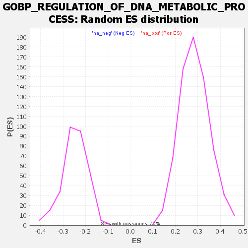

Profile of the Running ES Score & Positions of GeneSet Members on the Rank Ordered List
| Dataset | rank |
| Phenotype | NoPhenotypeAvailable |
| Upregulated in class | na_neg |
| GeneSet | GOBP_REGULATION_OF_DNA_METABOLIC_PROCESS |
| Enrichment Score (ES) | -0.516251 |
| Normalized Enrichment Score (NES) | -2.0831263 |
| Nominal p-value | 0.0 |
| FDR q-value | 0.0043270593 |
| FWER p-Value | 0.063 |
| SYMBOL | RANK IN GENE LIST | RANK METRIC SCORE | RUNNING ES | CORE ENRICHMENT | |
|---|---|---|---|---|---|
| 1 | MAPK3 | 46 | 67.413 | 0.0162 | No |
| 2 | KAT5 | 77 | 53.901 | 0.0323 | No |
| 3 | KPNA1 | 111 | 45.750 | 0.0424 | No |
| 4 | SPIRE2 | 126 | 43.723 | 0.0602 | No |
| 5 | PELI1 | 254 | 30.092 | 0.0183 | No |
| 6 | CAMSAP3 | 271 | 29.092 | 0.0271 | No |
| 7 | KDM1A | 341 | 24.442 | 0.0089 | No |
| 8 | SRC | 349 | 23.916 | 0.0189 | No |
| 9 | TGFB1 | 420 | 20.842 | -0.0018 | No |
| 10 | ATRX | 493 | 18.294 | -0.0249 | No |
| 11 | NEK7 | 587 | 15.380 | -0.0592 | No |
| 12 | NUDT16L1 | 616 | 14.851 | -0.0639 | No |
| 13 | KAT2B | 636 | 14.317 | -0.0647 | No |
| 14 | FGFR4 | 667 | 13.534 | -0.0710 | No |
| 15 | SETD7 | 671 | 13.508 | -0.0649 | No |
| 16 | NPPC | 717 | 12.404 | -0.0788 | No |
| 17 | HNRNPD | 749 | 11.999 | -0.0864 | No |
| 18 | AXIN2 | 798 | 10.901 | -0.1025 | No |
| 19 | SMARCD3 | 978 | 8.234 | -0.1805 | No |
| 20 | WAS | 1289 | 4.745 | -0.3208 | No |
| 21 | ZNF365 | 1465 | -5.097 | -0.3986 | No |
| 22 | FBXO4 | 1610 | -7.803 | -0.4607 | No |
| 23 | S100A11 | 1631 | -8.478 | -0.4652 | No |
| 24 | IL7R | 1701 | -11.098 | -0.4908 | No |
| 25 | DDX11 | 1724 | -11.881 | -0.4944 | No |
| 26 | RAD51AP1 | 1737 | -12.402 | -0.4931 | No |
| 27 | MYC | 1748 | -12.808 | -0.4906 | No |
| 28 | STN1 | 1787 | -14.356 | -0.5001 | No |
| 29 | POLQ | 1823 | -16.321 | -0.5072 | Yes |
| 30 | UCHL5 | 1837 | -17.110 | -0.5037 | Yes |
| 31 | RFC4 | 1863 | -18.448 | -0.5050 | Yes |
| 32 | DBF4B | 1877 | -18.885 | -0.5005 | Yes |
| 33 | BRCA1 | 1894 | -19.527 | -0.4971 | Yes |
| 34 | TIPIN | 1900 | -19.845 | -0.4884 | Yes |
| 35 | PAXIP1 | 1919 | -20.679 | -0.4852 | Yes |
| 36 | ATAD5 | 1922 | -20.909 | -0.4745 | Yes |
| 37 | NPAS2 | 1934 | -21.418 | -0.4677 | Yes |
| 38 | PINX1 | 2000 | -25.391 | -0.4836 | Yes |
| 39 | ABL1 | 2002 | -25.507 | -0.4699 | Yes |
| 40 | EREG | 2004 | -25.798 | -0.4560 | Yes |
| 41 | SUPT3H | 2009 | -26.922 | -0.4430 | Yes |
| 42 | AURKB | 2013 | -27.047 | -0.4293 | Yes |
| 43 | SKP2 | 2015 | -27.075 | -0.4148 | Yes |
| 44 | DSCC1 | 2025 | -28.124 | -0.4033 | Yes |
| 45 | RFC3 | 2026 | -28.164 | -0.3877 | Yes |
| 46 | WEE1 | 2027 | -28.182 | -0.3721 | Yes |
| 47 | ERCC8 | 2030 | -28.443 | -0.3572 | Yes |
| 48 | DTL | 2048 | -30.972 | -0.3479 | Yes |
| 49 | SMARCE1 | 2058 | -31.658 | -0.3345 | Yes |
| 50 | YEATS4 | 2061 | -32.119 | -0.3176 | Yes |
| 51 | DBF4 | 2074 | -32.993 | -0.3048 | Yes |
| 52 | HMGA2 | 2079 | -33.357 | -0.2882 | Yes |
| 53 | DKC1 | 2099 | -35.515 | -0.2772 | Yes |
| 54 | RAD51 | 2113 | -36.964 | -0.2627 | Yes |
| 55 | RFC5 | 2114 | -37.020 | -0.2422 | Yes |
| 56 | MCM7 | 2121 | -37.990 | -0.2239 | Yes |
| 57 | OBI1 | 2126 | -38.424 | -0.2044 | Yes |
| 58 | UBE2N | 2127 | -38.959 | -0.1828 | Yes |
| 59 | H2AX | 2140 | -40.642 | -0.1658 | Yes |
| 60 | E2F7 | 2141 | -40.647 | -0.1432 | Yes |
| 61 | EXOSC3 | 2145 | -42.517 | -0.1210 | Yes |
| 62 | CDC25A | 2156 | -44.664 | -0.1009 | Yes |
| 63 | CHEK1 | 2199 | -64.379 | -0.0845 | Yes |
| 64 | SIRT1 | 2219 | -87.108 | -0.0450 | Yes |
| 65 | CCDC117 | 2221 | -91.868 | 0.0055 | Yes |
